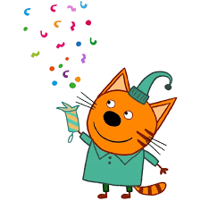

„Три кота“ е популярен детски анимационен сериал, създаден в Русия.
Главните герои са три малки котенца, които живеят със своите родители.
Във всеки епизод те се сблъскват с различни ситуации от ежедневието,
като чрез игри и разговори научават важни житейски уроци.
Анимацията е подходяща за деца и е много образователна.
Семейството на котетата
В анимацията „Три кота“ семейството играе много важна роля.
Котетата живеят заедно със своите родители – мама и татко котараци.
Родителите винаги помагат на Коржик, Компот и Карамелка,
дават им добри съвети и ги учат как да постъпват правилно
в различни житейски ситуации.
Епизоди
Анимационният сериал е съставен от кратки епизоди,
които продължават около 5 минути.
Всеки епизод разказва отделна история и завършва с поука.
Темите са свързани с училище, игри, семейство и приятелство.
Главни герои
Коржик
Коржик е най-енергичният от трите котета.
Той обича приключенията, игрите и често предлага нови идеи.
Компот

Компот е умен и спокоен.
Той обича да чете книги, да смята и винаги мисли логично.
Карамелка
Карамелка е най-малката и най-милата.
Тя обича да рисува, да пее и винаги се грижи за другите.
Каква е поуката от анимацията
Да бъдем честни и добри
Да си помагаме в трудни ситуации
Да уважаваме родителите си
Да решаваме проблемите спокойно
Защо ми харесва „Три кота“
Харесвам анимацията „Три кота“, защото е забавна и интересна.
Героите са симпатични, а историите са лесни за разбиране.
Освен това, сериалът учи на добри ценности и показва как трябва
да се държим с приятели и семейство.